Louis Tomlinson
This is a webpage for Louies and Directioners to learn all about singer-songwriter, Louis Tomlinson.
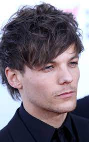 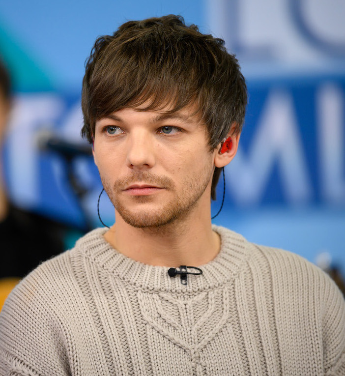 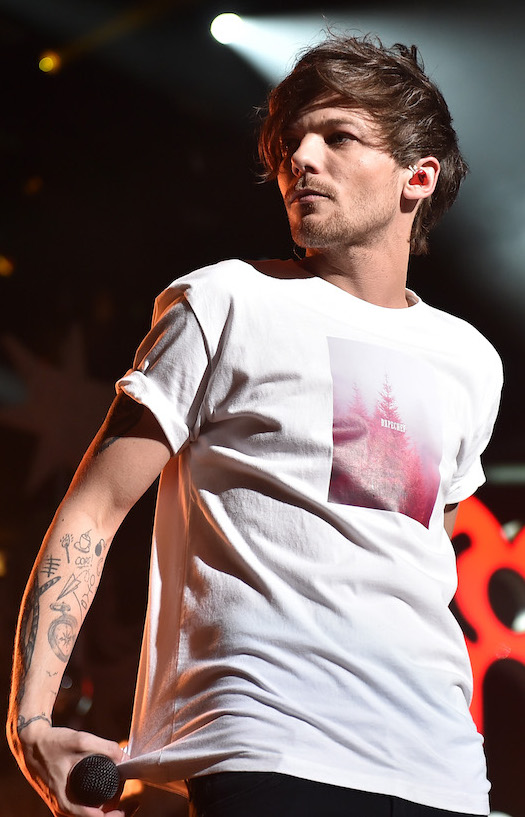
Biography
Louis William Tomlinson was born on December 24, 1991, in the town of Doncaster in South Yorkshire, England. His parents, Johannah and Troy Austin, divorced when he was young, and he took his (then) stepfather Mark Tomlinson's last name as his own. Louis is the oldest of seven, having five half-sisters and one half-brother: Charlotte, Félicité, twins Daisy and Phoebe, and twins Ernest and Doris. His mother and stepfather divorced before Ernest and Doris, who she later had with her husband, Dan Deakin. In December 2016, Louis’ mother, Johannah Deakin, died of leukaemia. Later, in March 2019, Louis’ younger sister, Félicité Tomlinson, died from an accidental overdose.
As a child and teen, Louis Tomlinson acted and sang on television and in school productions. He auditioned successfully for the television talent competition The X Factor in 2010, and the show’s judges teamed him with four other contestants — Harry Styles, Niall Horan, Liam Payne and Zayn Malik — to make a boy band. Performing as One Direction, this group became a chart-topping pop sensation. In later years, after his success with One Direction, Tomlinson returned to The X Factor as a judge and mentor. In late 2018, one of his protégés, Jamaican singer Dalton Harris, won season 15 of the show.
Louis' first single as a solo artist, "Just Hold On," debuted in December 2016 and peaked at No. 2 in the U.K. Seven months later a follow-up single, "Back to You," with Bebe Rexha, also cracked the Top 10. In March 2019 Louis released "Two of Us," a tender tribute to his mother. In January 2020, Louis released his debut album Walls, later going on to tour it in 2022.
My Favorite Quotation
"This is my first tour and this is a big deal to me to have your support and what's beautiful... I need you and you need me." - Louis Tomlinson
Tattoos, in chronological order
- Screw (looks like a little plus sign) – left ankle, 10/12/12
- Stick Figure on Skateboard – right forearm, 10/15/12
- Quotation Marks – right wrist, 10/15/12
- “Far Away” – right bicep, 10/15/12
- A Flock of Five Small Birds – right forearm, 11/9/12
- “Oops!” – right forearm, 11/9/12
- Camera – right forearm, 12/6/12
- Stereo Heart (later covered up) – right upper arm, 12/6/12
- Compass – right forearm, 12/19/12
- Bird – right forearm, 1/23/13
- Paper Airplane – right forearm, 1/23/13
- Triangle – right ankle, 2/2013
- Globe – right forearm, 2/25/13
- Cup of Tea – right forearm, 2/25/13
- Horseshoe – right forearm, 2/25/13
- “The Rogue” – both ankles, 3/25/13
- “It Is What It Is” – chest, 3/25/13
- “78” – chest, 3/25/13
- Stag – right upper arm, 4/24/13
- Heart (covered stereo heart) – right upper arm, 4/24/13
- Five Tally Marks – right forearm, 4/24/13
- Bomb – right forearm, 6/24/13
- Lit Match – right forearm, 6/24/13
- Spiderweb – right forearm, 6/24/13
- Broken Infinity Rope – right wrist, 6/24/13
- Tic-Tac-Toe – right forearm, 8/9/13
- Playing Card Suits – left wrist, 8/9/13
- “Bus 1” – right forearm, 8/9/13
- A Pointing Finger – right forearm, 10/10/13
- Pac-Man – right forearm, 10/11/13
- Spiderweb – right shin, 10/26/13
- Arrow – right forearm, 3/8/14
- Skull and Crossbones – left forearm, 8/15/14
- Smiley Face – right thigh, 9/7/14
- X Smiley Face – right forearm, 11/25/14
- “Given a Chance” – left forearm, 11/25/14
- Dagger – left forearm, 11/25/14
- “28” – left fingers (middle and ring), 12/19/15
- Penguin with Headphones – butt, 12/19/15
- Beer Mug – right forearm, 12/19/15
- “E” – left hand, 4/2017
- “X” – right forearm, 7/27/18
- “RG” – right forearm, early 2019
Louis Tomlinson World Tour Setlist
- "We Made It" – Louis Tomlinson
- "Drag Me Down" – One Direction
- "Don't Let It Break Your Heart" – Louis Tomlinson
- "Two of Us" – Louis Tomlinson
- "Always You" – Louis Tomlinson
- "Too Young" – Louis Tomlinson
- "7" – Catfish and the Bottlemen
- "Fearless" – Louis Tomlinson
- "Habit" – Louis Tomlinson
- "Copy of a Copy of a Copy" – Louis Tomlinson
- "Just Hold On" – Louis Tomlinson
- "Defenceless" – Louis Tomlinson
- "Beautiful War" – Kings of Leon
- "Little Black Dress" – Louis Tomlinson
- "Walls" – Louis Tomlinson
- "Only the Brave" – Louis Tomlinson
- "Through the Dark" – One Direction
- "Kill My Mind" – Louis Tomlinson
Awards & Nominations
- As a member of One Direction:
- Nominations: 285
- Wins: 177
- Full list here
- As a solo artist:
- 2017
- Radio Disney Music Awards, Best Collaboration, Nominated
- Teen Choice Awards, Choice Music: Collaboration – "Just Hold On", Won
- Teen Choice Awards, Choice Electronic/Dance Song, Nominated
- Teen Choice Awards, Choice Male Hottie, Nominated
- BreakTudo Awards, New Artist International, Won
- MTV Europe Music Awards, Best UK Act, Won
- 2018
- IARA Awards, Best Male Artist, Nominated
- iHeartRadio Music Awards, Best Solo Breakout, Won
- Teen Choice Awards, Choice Male Artist, Won
- 2019
- National Television Awards, TV Judge, Nominated
- Billboard Music Awards, Top Social Artist, Nominated
- Teen Choice Awards, Choice Single:Male Artist, Won
- BreakTudo Awards, International Fandom, Nominated
- 2020
- TDY Awards, Album of the Year - Walls, Won
- TDY Awards, Biggest Crush, Nominated
- iHeart Radio Music Awards, Best Fan Army, Nominated
Discography (Band & Solo)
| Album/Song Title |
Artist(s) |
Release Date |
Songwriting Credits |
Cover Art |
| Up All Night |
One Direction |
November 18, 2011 |
3 of 18 |
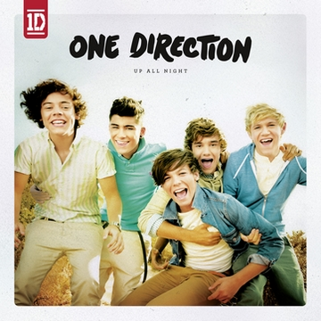 |
| Take Me Home |
One Direction |
November 9, 2012 |
5 of 20 |
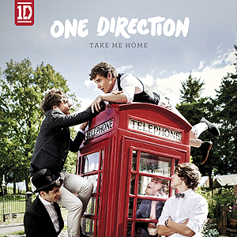 |
| Midnight Memories |
One Direction |
November 25, 2013 |
12 of 18 |
 |
| Four |
One Direction |
November 17, 2014 |
9 of 16 |
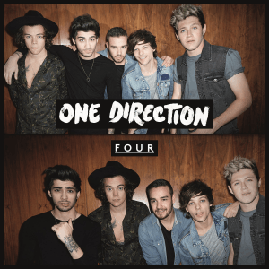 |
| Made In The A.M. |
One Direction |
November 13, 2015 |
7 of 17 |
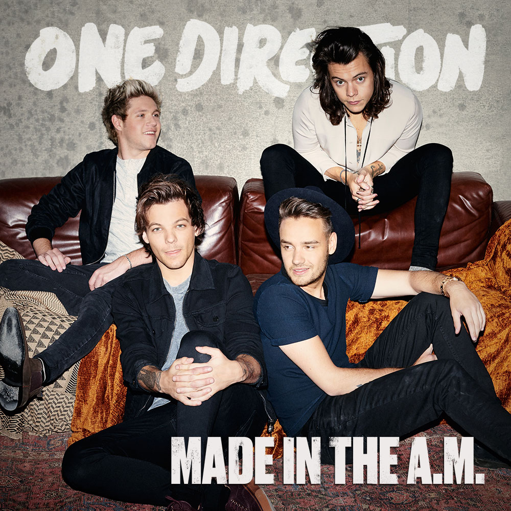 |
| Perfect EP |
One Direction |
October 21, 2015 |
3 of 4 |
 |
| "Just Hold On" |
Louis Tomlinson & Steve Aoki |
December 10, 2016 |
1 of 1 |
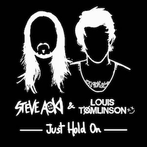 |
| "Back to You" |
Louis Tomlinson (feat. Bebe Rexha & Digital Farm Animals) |
July 21, 2017 |
1 of 1 |
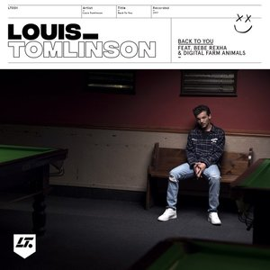 |
| "Just Like You" |
Louis Tomlinson |
October 11, 2017 |
1 of 1 |
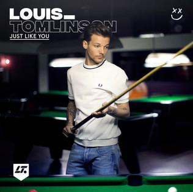 |
| "Miss You" |
Louis Tomlinson |
December 1, 2017 |
1 of 1 |
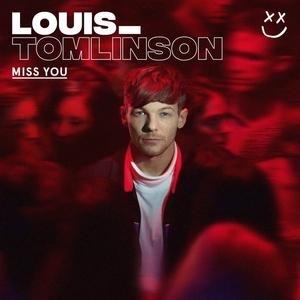 |
| Walls |
Louis Tomlinson |
January 31, 2020 |
12 of 12 |
 |
| "Copy of a Copy of a Copy" |
Louis Tomlinson |
Unreleased, first sung at Live from London |
1 of 1 |
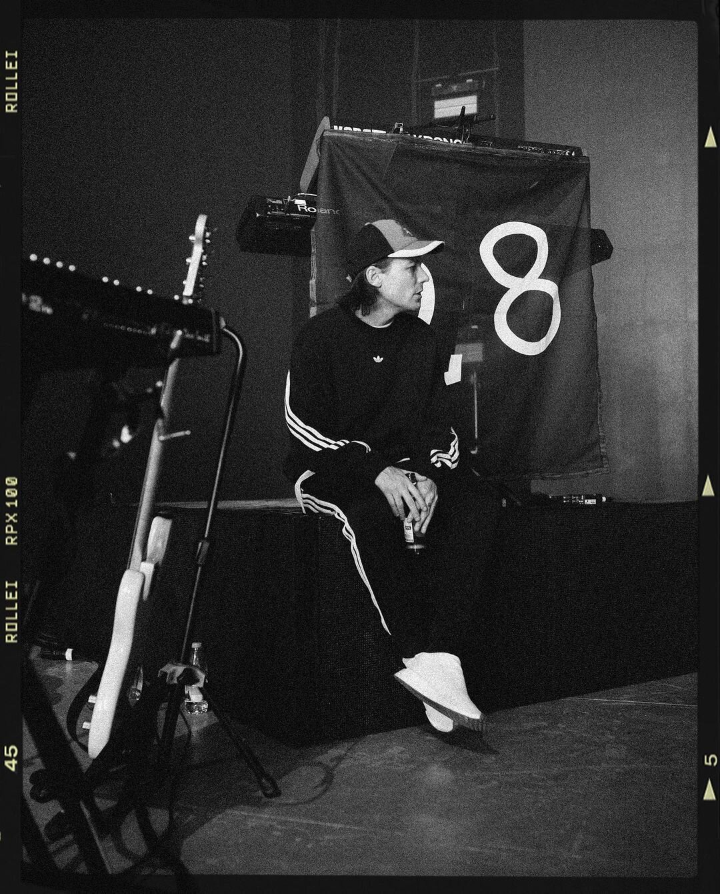 |
| "Change" |
Louis Tomlinson |
Unreleased, first sung at The Away From Home Festival |
1 of 1 |
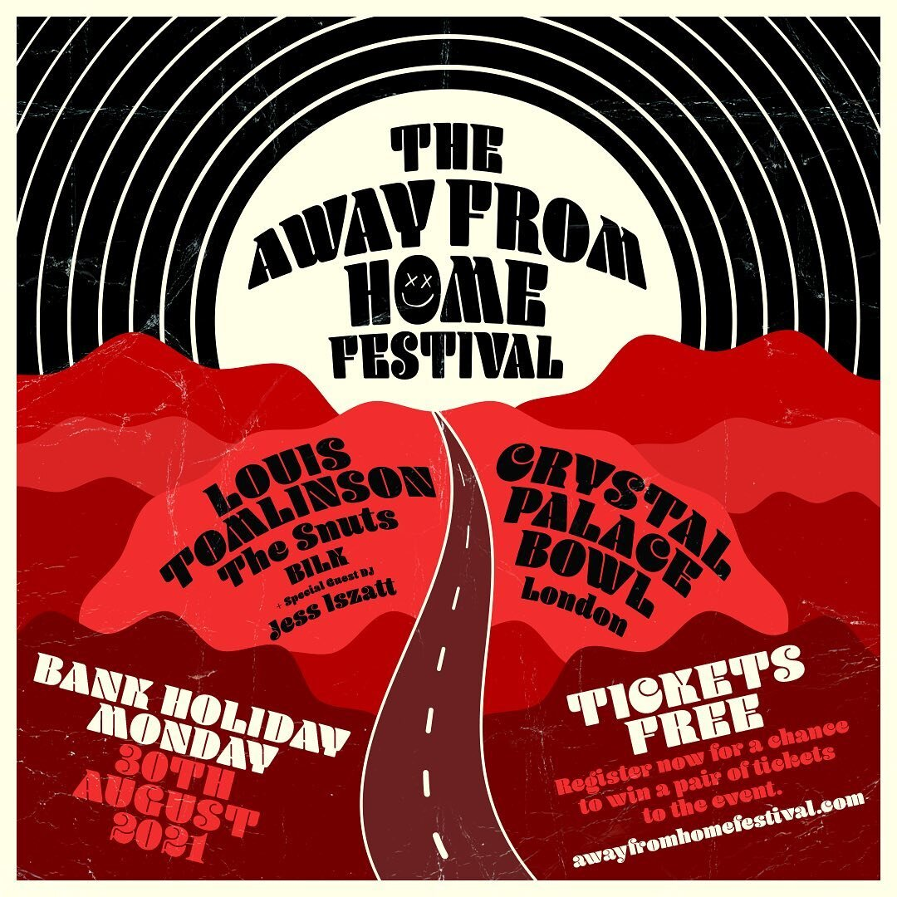 |
Contact Info & Social Media
Email: louistomlinson28@gmail.com
Phone: 123-456-7890
Website: louis-tomlinson.com
Merch Store: merch.louis-tomlinson.com
Instagram: @louist91
Facebook: Louis Tomlinson
Twitter: @Louis_Tomlinson
YouTube: Louis Tomlinson
Spotify: Louis Tomlinson
Apple Music: Louis Tomlinson
{kind=link}
{kind=link}
.png)
{kind=link}
{kind=link}
.png)
{kind=link}
.jpeg){kind=link}
{kind=link}
{kind=link}